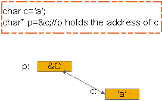
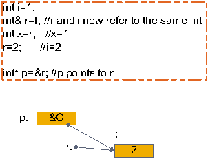
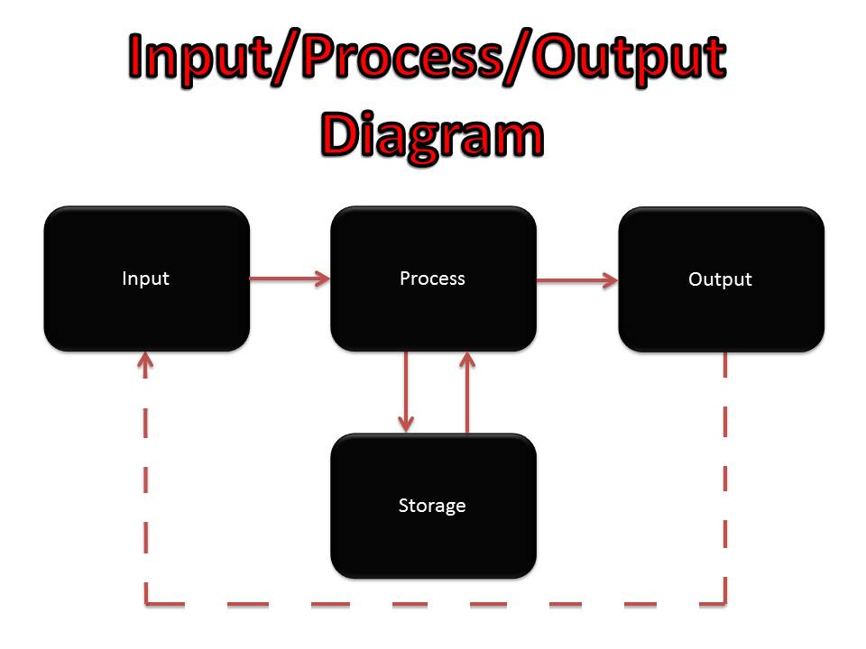

学习的一些技巧
探索 & 未知 & 冒险
- 对比
-
内化理解
- 抽象
- 图形化
- 类比
- 反馈
- 目标
对比
compare
CSS 属性
position: sticky;
top: 30px;
position: fixed;
top: 30px;
比较两个值是否相等来验证问题
let a = [1,2,3];
let b = [1,2,3];
console.log(a === a.slice(0, 3)); // false
和心里的预期值来比较
let a = [1,2,3];
let injector = x => x = [2, 3, 4];
injector(a);
console.log(a); // [1, 2, 3]
Git bisect

内化理解
你 get 到了吗？
Do you get it?


let x = {name: 'foo' } // x = &obj
let arr = [ x ]; // [ &obj ]
arr[0].name = 'bar' // obj.name = 'bar'
console.log(x.name); // 'bar'
- docker repository
- git repository
- git branch
- git staging area
- git tag
- git submodule
- git patch
- stream
- blob
- http request
- socket
套接字
Socket
#include<winsock2.h>
#include<stdio.h>
#pragma comment(lib,"ws2_32.lib")
void main()
{
WSADATA wsaData;
SOCKET sockServer;
SOCKADDR_IN addrServer;
SOCKET sockClient;
SOCKADDR_IN addrClient;
WSAStartup(MAKEWORD(2,2),&wsaData);
sockServer=socket(AF_INET,SOCK_STREAM,0);
addrServer.sin_addr.S_un.S_addr=htonl(INADDR_ANY);//INADDR_ANY表示任何IP
addrServer.sin_family=AF_INET;
addrServer.sin_port=htons(6000);//绑定端口6000
bind(sockServer,(SOCKADDR*)&addrServer,sizeof(SOCKADDR));
//Listen监听端
listen(sockServer,5);//5为等待连接数目
printf("服务器已启动:\n监听中...\n");
int len=sizeof(SOCKADDR);
char sendBuf[100];//发送至客户端的字符串
char recvBuf[100];//接受客户端返回的字符串
//会阻塞进程，直到有客户端连接上来为止
sockClient=accept(sockServer,(SOCKADDR*)&addrClient,&len);
//接收并打印客户端数据
recv(sockClient,recvBuf,100,0);
printf("%s\n",recvBuf);
//关闭socket
closesocket(sockClient);
WSACleanup();
}
服务端
#include<winsock2.h>
#include<stdio.h>
#pragma comment(lib,"ws2_32.lib")
void main()
{
WSADATA wsaData;
SOCKET sockClient;//客户端Socket
SOCKADDR_IN addrServer;//服务端地址
WSAStartup(MAKEWORD(2,2),&wsaData);
//新建客户端socket
sockClient=socket(AF_INET,SOCK_STREAM,0);
//定义要连接的服务端地址
addrServer.sin_addr.S_un.S_addr=inet_addr("127.0.0.1");//目标IP(127.0.0.1是回送地址)
addrServer.sin_family=AF_INET;
addrServer.sin_port=htons(6000);//连接端口6000
//连接到服务端
connect(sockClient,(SOCKADDR*)&addrServer,sizeof(SOCKADDR));
//发送数据
char message[20]="HelloSocket!";
send(sockClient,message,strlen(message)+1,0);
//关闭socket
closesocket(sockClient);
WSACleanup();
}
客户端
服务端
- 初始化socket
- 在本地端口监听，阻塞进程
- 接收消息
- 关闭socket
- 释放内存
客户端
- 初始化socket
- 连接至远程socket所在的ip和端口
- 发送消息
- 关闭socket
- 释放内存
Socket socket = getSocket(type = "TCP")
connect(socket, address = "1.2.3.4", port = "80")
send(socket, "Hello, world!")
close(socket)
var ws = new WebSocket("wss://echo.websocket.org");
ws.onopen = function(evt) {
console.log("Connection open ...");
ws.send("Hello WebSockets!");
};
ws.onmessage = function(evt) {
console.log( "Received Message: " + evt.data);
ws.close();
};
ws.onclose = function(evt) {
console.log("Connection closed.");
};
JS websocket连接
HTTP？
POST /examples/default.jsp HTTP/1.1
Accept: text/plain; text/html
Accept-Language: en-gb
Connection: Keep-Alive
Host: localhost
User-Agent: Mozilla/4.0 (compatible; MSIE 4.01; Windows 98)
Content-Length: 33
Content-Type: application/x-www-form-urlencoded
Accept-Encoding: gzip, deflate
lastName=Franks&firstName=Michael
http客户端在socket套接字中发送的文本内容
String firstLine = socket.readLine();
firstLine == 'POST /examples/default.jsp HTTP/1.1' // true
http客户端在socket套接字中发送的文本内容
内化理解
- 抽象
- 图形化
- 类比
抽象
Abstraction
将一个东东或者流程 赋值 给一个变量名
动物 = ??
猫 = ??
流的概念
stream, stdin, stdout, file
- 创建一个流对象，赋值为a
- 监听a的data事件读取数据或者调用a的write方法，输出数据
- 关闭流
const myStream = getWritableStreamSomehow();
myStream.write('一些数据');
myStream.write('更多数据');
myStream.end('完成写入数据');
Rx.js
管道的概念
pipe
数组的概念
array, list, tuple, buffer
面向对象编程
状态机, 设计模式
字符串和字节的概念
String, Byte
- Promise
- Generator
- Symbol
- Async Await
- React Component / Element
- HTML Node / Element
IPO
Input Process Output
图像化
graph
画草图
无论是在草稿纸上还是电脑建模软件，都可以画草图来整理思路
UML统一建模语言
使用标准规范的图形和含义来描述系统的结构
服务端
- 初始化socket
- 在本地端口监听，阻塞进程
- 接收消息
- 关闭socket
- 释放内存
客户端
- 初始化socket
- 连接至远程socket所在的ip和端口
- 发送消息
- 关闭socket
- 释放内存


https://www.ibm.com/developerworks/cn/rational/r-uml/index.html
类比
analogy
记忆力
如果发现自己总是经常忘记，那就是没有理解，理解就相当于建立突触的过程
理解在先，记住不是重要的
不要死记硬背，而是先自己理解了后记住自己理解的那个东西，可以用的时候查
睡眠有助于记忆，第一天搞不懂，第二天再试试。
主题联想
- Stream流-状态机
- Async await - Promise
- JS - Array.splice